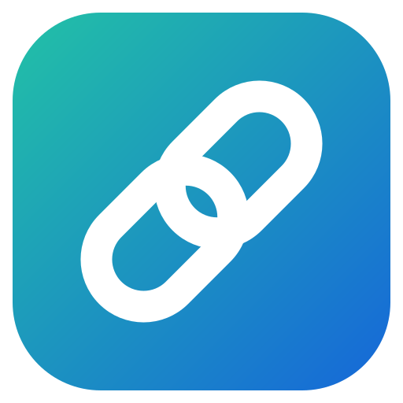

Olink
Your phone on Linux
Not connected
Connect your phone
Starting…
- Put the phone on the same Wi-Fi as this computer.
- On the phone, open Settings → Device connect → PC and choose to scan a QR code.
- Scan this code.
Connected before? Tap this PC in Settings → Device connect → PC on the phone, no QR needed.
Phone screen
Show the phone in a window here and use it with your mouse and keyboard.
Showing
Or show one app
It opens in its own window, and the phone stays free to use.
Waiting for the phone's app list…
You can also start it on the phone: Settings → Device connect → PC → Screencast. Close the window to stop.
Files
Drop files or folders anywhere on this window to send them. Files shared from the phone are saved in Downloads/Olink.